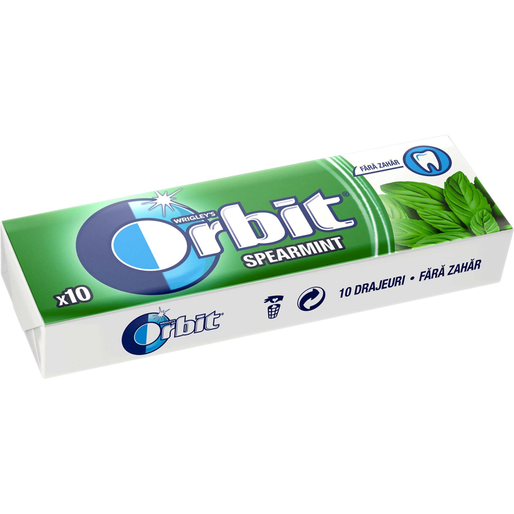

e314 - guajaková guma - potravinářských přídatných látek ... E314: GUMA GUAIACO Guaiac guma je přírodní pryskyřice vyráběná ze stromu druhu Guajacum officinale (viz foto) a také z podobných tropických stromů. Tento produkt je antioxidantem v cola. V současné době nejsou známy žádné negativní vedlejší účinky na koncentrace běžně užívaného guajakového gomu, ale vyskytly se některé případy alergických forem spojených s ...
Mikroporinė guma - Almeida Megzta, 80 mm baltos spalvos elastinė juostelė (guma). add_shopping_cartĮ krepšel ...
Duslintuvo guma (tvirtinimas) | Naujos ir naudotos ... Dekoruota guma petnešėlėms. Spalva balta. Plotis 1,8cm. Kaina už metrą... 0.90€ / m Į krepšelį . Patinka. Palyginti. 1; 2 > >| Rodoma nuo 1 iki 40 iš 74 (2 puslapių) Pristatymas . ne tik ...
Visa tiesa apie gumą - Sileta Guma gali turėti keletą reikšmių, priklausomai nuo to, kaip ji naudojama. Yra kramtomoji guma, gumos arabikos, dantenų diskai, gumos saldainiai, taip pat dvi tos pačios pavadinimo vietos. Kramtomoji guma - tai saldainių tipas, kurį reikia kramtyti, yra pagamintas iš medžio latekso, vadinamo kramtomoji guma, ir yra natūralus produktas.
Siuvimo reikmenys - guma - megzta guma Mes darome pasaulį lankstesniu! Koncentruotas gumos ir plastiko gaminių asortimentas Palankios kainos ir sąlygos pirkti tiek mažmena, tiek didmena Apie mus Mes tikime, kad gera komanda – jau pusė darbo! …kad šiandien būtume geresni nei vakar Mes atsakingai žiūrime tiek į parduodamų prekių, tiek ir į aptarnavimo kokybę. Daugiau 1 Metų profesionalios patirties 1 % […]
SBR lakštinė guma ~ AGOMA Mikroporinė guma (kitaip dar vadinama porėta ar akyta guma) gaminama iš EPDM gumos ir pasižymi nedideliu svoriu. Mikroporinė guma atspari atmosferos poveikiui (orui, UV spinduliams), ugniai. Mikroporinėje gumoje esančios mikroporos yra uždaros struktūros, todėl nepraleidžia oro ir negeria vandens. Mikroporinė guma naudojama termoizoliacijai, tarpinių ir kitų sandariklių gamyboje ...
SEL - GUMA guma statusas T sritis fizika atitikmenys: angl. rubber vok. Gummi, m rus. резина, f pranc. caoutchouc, m; gomme, f Fizikos terminų žodynas : lietuvių ...
Guma | Elastinė guma | Guma siuvimui - Darau.lt guma statusas T sritis ekologija ir aplinkotyra apibrėžtis Sintetinio arba natūraliojo kaučiuko vulkanizacijos produktas.atitikmenys: angl. gum; processed rubber; rubber; vulcanized rubber vok. Gumme, f rus. резина, frus. резина, f
Kramtomoji guma - įsigykite internetu arba mūsų ... Plasti Dip’as kitaip dar vadinamas „skysta guma“, todėl jis puikiai izoliuos nuo drėgmės sodo baldus, tvoras ir kitus įrenginius. Taip pat jis neblunka saulėje, todėl daiktai ilgai išlaikys naują žvilgesį.
Pradžia ~ AGOMA
2020.10.29 11:24

+370 315 77016 EN LT PL RU Pradžia Apie mus Produkcija Guminės žarnos Naftos produktams Vandeniui Suspaustam orui Dujoms Maisto produktams Aušinimo sistemai Garui Abrazyvui Chemijai Auto Pieno ūkiams PVC, PU žarnos Skysčiams, orui Įsiurbimui Medžio drožlėms Naftos produktams Nuotekoms, asenizacijai Plokščios, vandeniui Plovimui Ventiliacijai Žemės ir pieno ūkiams Kompozicinės žarnos Sąvaržos Antgaliai žarnų sujungimams Pramoninė guma (lakštinė) Sandarinimo medžiagos Plastikai Naujienos Kontaktai Menu Pradžia Apie mus Produkcija Guminės žarnos Naftos produktams Vandeniui Suspaustam orui Dujoms Maisto produktams Aušinimo sistemai Garui Abrazyvui Chemijai Auto Pieno ūkiams PVC, PU žarnos Skysčiams, orui Įsiurbimui Medžio drožlėms Naftos produktams Nuotekoms, asenizacijai Plokščios, vandeniui Plovimui Ventiliacijai Žemės ir pieno ūkiams Kompozicinės žarnos Sąvaržos Antgaliai žarnų sujungimams Pramoninė guma (lakštinė) Sandarinimo medžiagos Plastikai Naujienos Kontaktai
Mes darome pasaulį lankstesniu!
Koncentruotas gumos ir plastiko gaminių asortimentas
Palankios kainos ir sąlygos pirkti tiek mažmena, tiek didmena Apie mus
Mes tikime, kad gera komanda - jau pusė darbo!
...kad šiandien būtume geresni nei vakar
Mes atsakingai žiūrime tiek į parduodamų prekių, tiek ir į aptarnavimo kokybę.
Daugiau 1 Metų profesionalios patirties 1 % Patenkintų klientų 1 Eksporto valstybės 1 Išsiųstų prekių
Gumos gaminiai
Produkcija
Guminės žarnos
Platus guminių žarnų pasirinkimas naftos produktams, vandeniui, suspaustam orui, dujoms, abrazyvui ir kt.
PVC, PU žarnos
PVC žarnos skysčiams, orui, medžio drožlėms, ventiliacijai, naftos produktams, žemės ūkiui, chemijai, laistymui ir kt.
Kompozicinės žarnos
Kompozicinės žarnos chemijai, naftos produktams, maistui, abrazyvui, kriogeniniams skysčiams ir kt.
Sąvaržos
Įvairių tipų ir dydžių GBS, ASFA, MINI, DW ir kt. sąvaržos žarnų tvirtinimui. Cinkuoto plieno, aliumininės, žalvarinės, nerūdijančio plieno sąvaržos.
Antgaliai žarnų sujungimams
Populiariausi antgaliai ir jungtys žarnų sujungimams: Camlock, Perrot, Tank truck, Storz, Geka. Greitos jungtys suspausto oro transportavimui.
Pramoninė guma (lakštinė)
SBR, NBR, EPDM, CR guma; silikoninė, natūrali, nevulkanizuota guma; trinčiai atspari guma; tarpinių guma; guminiai kilimėliai ir kt.
Sandarinimo medžiagos
Platus sandarinimo medžiagų pasirinkimas: termolakštai, įkamšos, termokartonas, techninis kartonas. Tarpinių pagal brėžinius gamybos paslauga.
Plastikai
Poliamidas PA 6 arba PA 6 G (lietas) dar vadinamas kapronu, nailonu, plačiai naudojamas įvairių pramonės šakų produktų, įrengimų detalių gamybai.
Stengiamės dėl Jūsų
Dar neradote dominančios produkcijos? Ne bėda!
Susisiekimo forma
Techninis kartonas tarpinėms
Jūsų dėmesiui pristatome naują produktą mūsų asortimente: techninį kartoną tarpinėms „Guamotor“. Dėka savo savybių plačiai naudojamas automobilių pramonėje (karteriams, karbiuratoriams, pavarų sistemose ir pan.), tačiau tinka visur, kur galimas sąlytis su tepalu ir kitais naftos produktais.
Žarnos sėjamosioms
Pristatome naują produktą žemės ūkiui – žarnas sėjamosioms „Agroflex UV“. Dvi žarnos – dvi paskirtys: žarna su pilka spirale: trąšoms ir mėšlo paskirstymui, o su žalia spirale – sėkloms.Specialiai sukurta sėjamosioms: lanksti, lygiu vidumi.
Nestandartinio dydžio tarpinės
Reikia nestandartinio dydžio tarpinės? Siūlome tarpinių gamybos pagal brėžinius paslaugą (iš gumos, kartono, paranito). Maksimalus tarpinės storis 30 mm. Didesnio, nei 2500 x 1600 mm dydžio gaminius klijuojame.
Mes rūpinamės savo klientais
Ką mūsų klientai kalba apie mus?
UAB „Agoma“ tai tikrai patikimas, geras ir naudingas partneris. Bendradarbiaudami su „Agoma“ mes gauname: Geras kainas, visas prekes viename sandėlyje, vienareikšmiai gerą gumos ir PVC gaminių kokybę. Bendradarbiavimas su UAB „Agoma“ tai ritmingas, operatyvus, kompleksiškas, nenutrūkstamas darbas mūsų įmonėje. UAB „Agoma“ tai ilgalaikė partnerystė!!! TZOV "Vidlunia A" "AGOMA has always taken a good care of me as a customer and there partner. They are always reliable and prompt in there service and I would like to send a big THANK YOU. Overall experience is great and I highly recommend this company". Mariusz G. "AGOMA ir profesionāļi savā darbības sektorā. Tirgotā prece vienmēr ir kvalitatīva, un pats galvenais, ka ļoti operatīvi tiek apstrādāti pasūtījumi, un pieprasījumi. Priecē tas, ka šim uzņēmuma vienmēr pieprasītā prece ir uz vietas noliktavā, līdz ar to nav jāgaida nedēļas, kamēr var tikt pie preces. Ļoti atsaucīgi un augsti kvalificēti darbinieki! SIA ESL MARINE rekomendē uzņēmumu AGOMA kā uzticamu, profesionālu sadarbības partneri!" Raitis Rems SIA ESL MARINE, LATVIA "Esame labai patenkinti Jūsų komandos darbu. Pristatymai įvykdomi labai operatyviai ir sklandžiai. Labai esame dėkingi. Ačiū už Jūsų profesionalumą ir dėmesingumą". Aleksas UAB „Baltijos Brigantina“